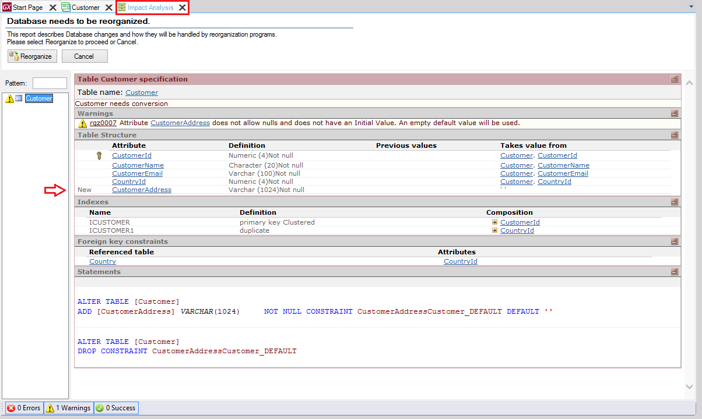

Impact Analysis
When pressing the F5 key, GeneXus examines the impact that the new definitions made in the Knowledge Base will cause the database. Then, it shows a report called Impact Analysis that indicates which additions or structural changes need to be made in the database; this report also details the SQL Statements that will be executed upon confirmation. The following image shows an Impact Analysis report that informs that a new attribute (CustomerAddress) will have to be added to the CUSTOMER table:  Note: some symbols will assist you in recognizing certain special situations. For example, a key symbol You can press the “Reorganize” button in order to proceed with the reorganization or you can choose to cancel. The term “Reorganize” means to reorganize the database, that is to say, it refers to the task of making changes to it. When you select to reorganize, GeneXus creates the programs to change the database and executes them, making the necessary changes. Next, it generates the necessary programs corresponding to the application itself. In the above image, only one change is shown to be performed to one table, but several changes may be detected and shown to be performed to different tables. Besides, the first time you press the F5 key in a Knowledge Base, the title "Database needs to be reorganized" is replaced by "The Database tables will be created" and the “Reorganize” button is replaced by the "Create" button. In some cases, the Impact Analysis report may inform that no structural changes need to be made in the database. Note that the reorganization script that will be running is saved in ReorganizationScript.txt. This may be useful if a DBA must analyse the script before being executed.
|
 in the table structure area (right) indicates that the attribute is keys. An exclamation symbol represents a warning.
in the table structure area (right) indicates that the attribute is keys. An exclamation symbol represents a warning.| Backlinks | ||
| Toc:Coded Messages | Create Database Tables | Impact Database Tables |
| My first Offline Native Mobile application |